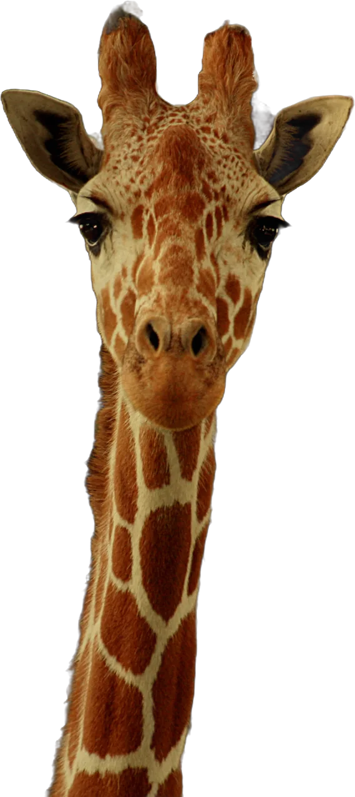
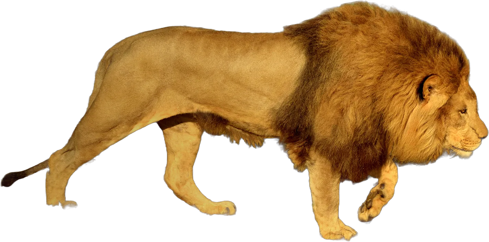
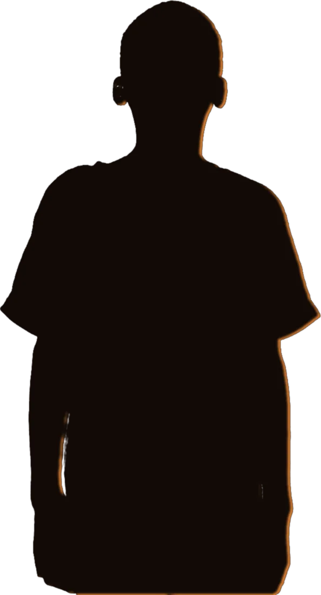
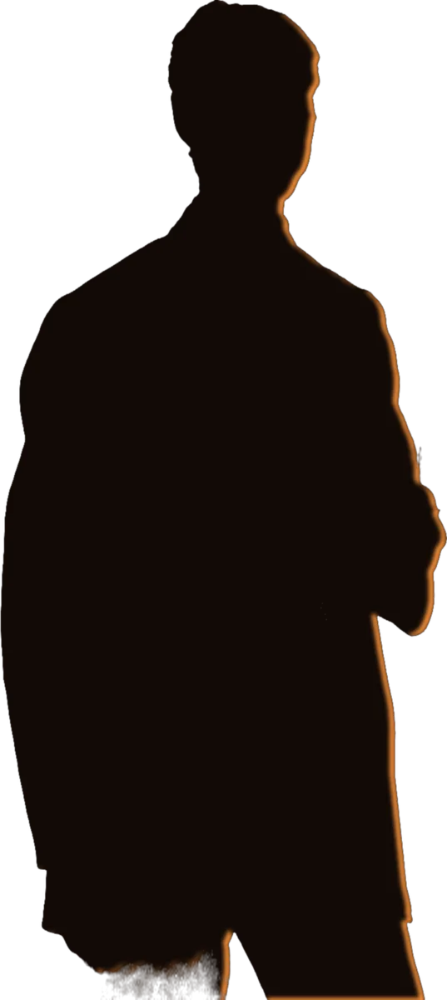
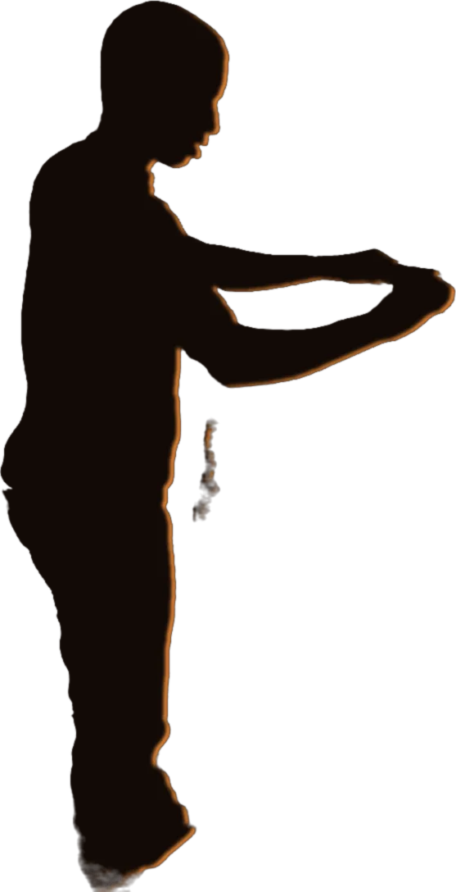
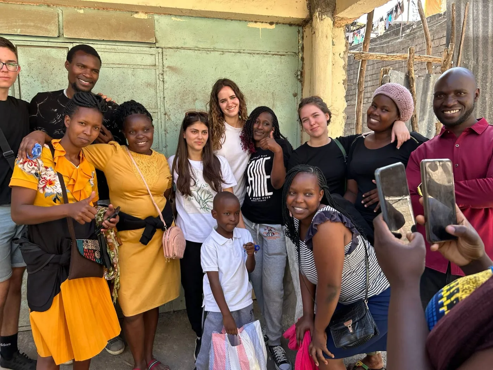

Liceul Internațional Integritas · Budiu Mic, Mureș
Africa pe care n-o arată documentarele
În fiecare an, clasa a XII-a pleacă acolo să ajute. Anul acesta construim o biserică. Derulează: povestea durează un minut.

Leul e partea frumoasă a poveștii.
Pe el îl filmează toată lumea. Restul se aude mai greu, așa că am coborât din mașină.


„Mamă, mi-e foame.”
În februarie 2025, colegii noștri de la Pipeline Adventist Primary School, în Kenya, au pregătit pachete cu alimente pentru 50 de familii ale elevilor de acolo și le-au dus din casă în casă.

„N-avem unde să ținem predica.”
O comunitate adventistă care se strânge unde găsește loc. Anul acesta, pentru o astfel de comunitate ridicăm o biserică.

„N-avem cu ce să-i învățăm pe copii.”
Cretă, caiete, o tablă care nu se șterge până la alb. Lucruri pe care la noi nu le mai numără nimeni.
Aici intrăm noi în cadru.
Suntem în jur de 30 de elevi din clasa a XII-a. Avem mâini, timp și un an întreg să ne pregătim. Ne lipsesc banii pentru drum și pentru materiale.
Ready to serve
În fiecare an, clasa a XII-a pleacă.
La Integritas, fiecare clasă are o săptămână de misiune într-un oraș din România. În clasa a XII-a, săptămâna devine o călătorie de 3–4 săptămâni în Africa.

| Când | Unde | Ce am făcut |
|---|---|---|
| feb. 2025 | Pipeline Adventist Primary School, Kenya | Pachete cu alimente de bază, articole de uz casnic și dulciuri pentru 50 de familii, duse acasă la fiecare. |
| anul acesta | [de completat: localitatea, țara] | Construim o biserică. [de completat: ce construim concret, cât costă, când plecăm] |
Hai să fim parteneri.
Căutăm oameni care pun umărul: cu bani, cu materiale sau cu o colectă.
- Firme
- Materiale de construcție, transport sau o sumă printr-un contract de sponsorizare. [de completat: ce oferă școala partenerilor]
- Părinți și prieteni
- Orice sumă, o dată sau lunar. Și o rugăciune pentru drum.
- Biserici
- O colectă de sabat pentru misiune sau o seară în care venim să povestim ce facem.
Pune o cărămidă.
Donațiile pentru Liceul Integritas merg prin Fundația Educatio Plena, contul publicat de școală.
Donează pe site-ul școliiBeneficiar: Fundația Educatio Plena
Liceul Internațional Integritas, Budiu Mic, com. Crăciunești, jud. Mureș
RO77 RZBR 0000 0600 1886 6089RO27 RZBR 0000 0600 2135 5524Detaliile plății: [de completat: mențiunea pe care o cere școala pentru misiunea din Africa]
Sursa: pagina liceulintegritas.ro/donatii
Întrebări: Goran Teodora, secretariat · 0744 629 359 · secretariat@liceulintegritas.ro